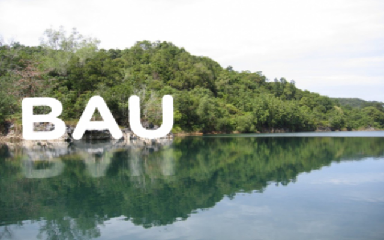
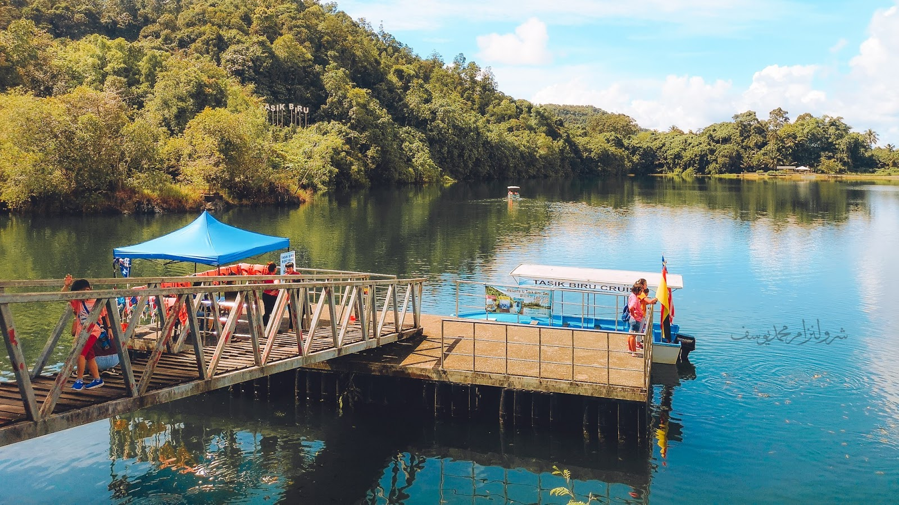
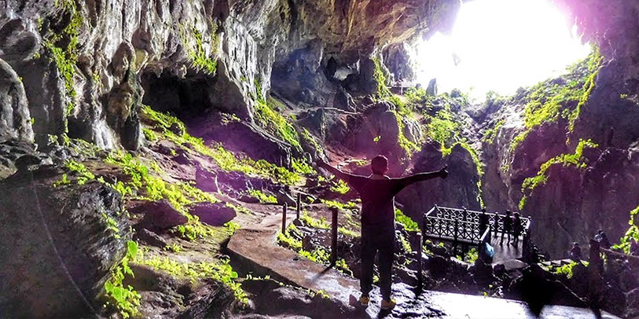
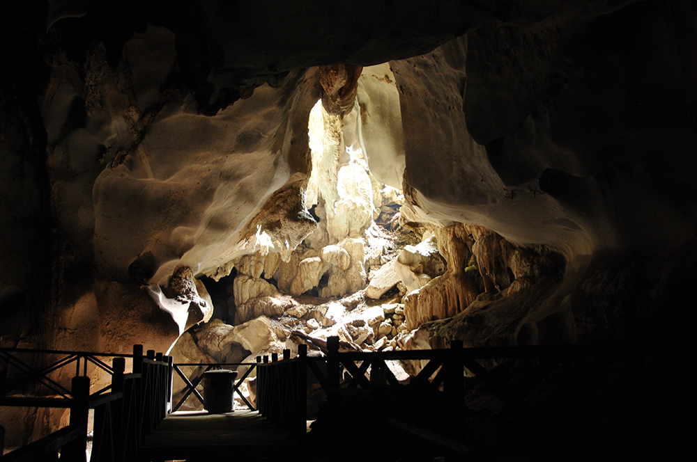
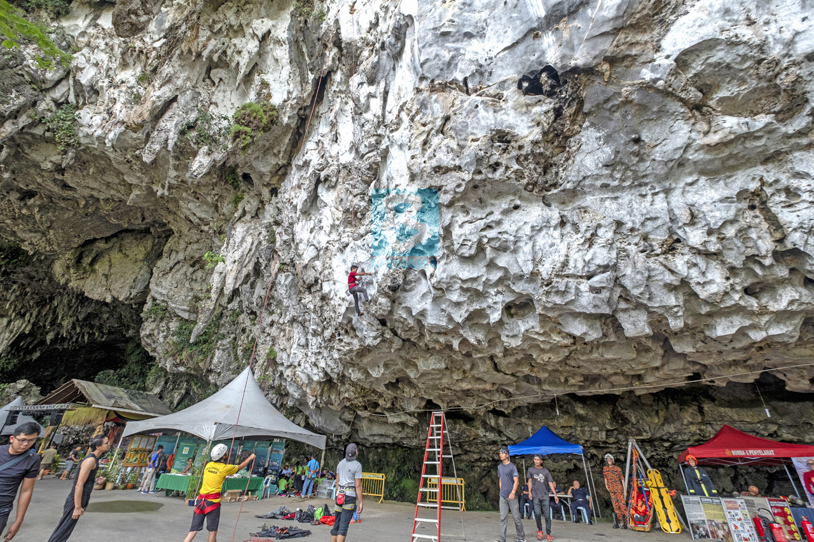
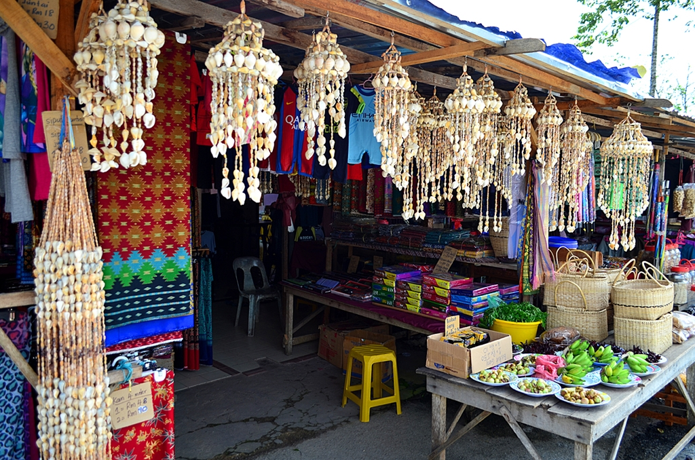

☰
Places in Bau



Bau is a well-known historical, scenic, and culturally significant town in the Malaysian state of Sarawak. Here are a few interesting places in Bau to check out and the reasons why Bau should be on your travel itinerary.
Adventure Awaits
There are many natural treasures in Bau that are just waiting to be discovered. Two fascinating limestone cave systems that provide distinctive forms and an insight into the region's geological past are Wind Cave and Fairy Cave. Tasik Biru is a picturesque lake created from a flooded open-pit gold mine that appeals to anyone looking for a cool swim. Hikers seeking adventure can climb Mount Serapi, Mount Singai, or Mount Jagoi, all of which provide amazing panoramic views.
Immerse Yourself in Culture
Bau is the traditional home of the Bidayuh, an indigenous people with a strong culture and a long history. The Bung Bratak Heritage Centre offers information about their customs, and the Serikin Weekend Market allows you to see their way of life up close. You can enjoy the vibrant atmosphere and discover locally produced foods and souvenirs here.
Step Back In Time
Explore the remains of Bau's gold mining past to learn more about its interesting past. While there are historical markers such as the Black Wooden Pillar, the town is still home to the remains of former mining buildings. The Bau Gold Museum has further information about that time period.
Food Paradise
Bau has a really pleasant food scene. Visit the many night markets and kopitiams (traditional coffee houses) to try local specialties. Try some of the distinctive Bidayuh cuisine, and don't miss up the opportunity to check out the lively Siniawan Night Market on the weekends.
Photos
1 / 9

Wind Cave
2 / 9

Fairy Cave rock climbing
3 / 9

Blue Lake
4 / 9

View of Mount Singai
5 / 9

View of Mount Serapi
6 / 9
Bau Gold Mine Museum
7 / 9

Bung Bratak Heritage Center
8 / 9

Siniawan Night Market
9 / 9

Serikin Market